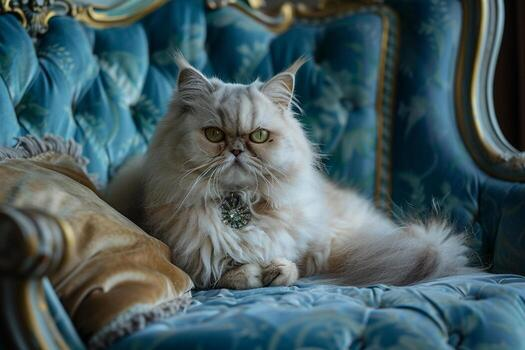

Introduction to Cats
Cats are popular household pets known for being playful and independent.
They come in many breeds and often enjoy relaxing in warm spaces.
Fun Facts About Cats
Interesting Behaviors
- Cats sleep 12–16 hours a day
- They have excellent hearing
- Cats can jump six times their body length
Basic Care Steps
- Provide daily food
- Ensure clean water
- Schedule vet visits
Cat Photo

Health Tip
Provide toys and scratching posts to keep your cat active.